First（全体像・導入）

Main 資料（2 / 15）
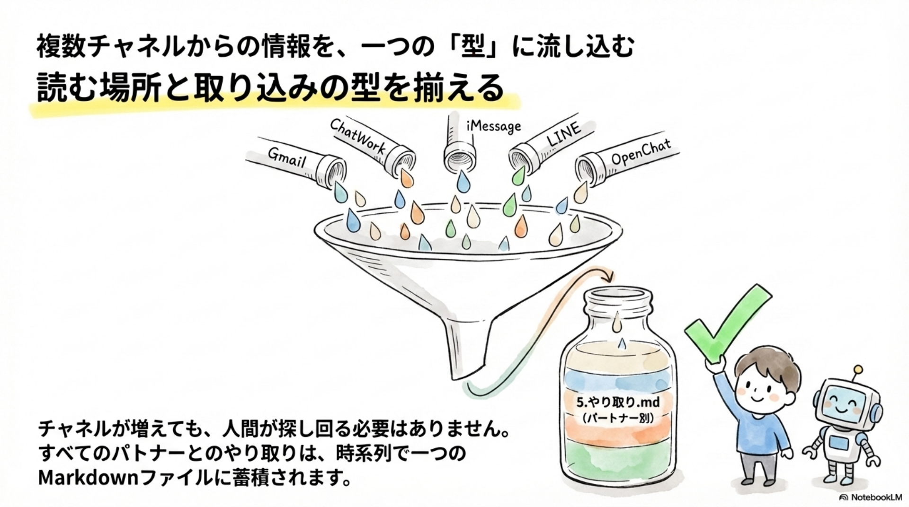
Main 資料（3 / 15）
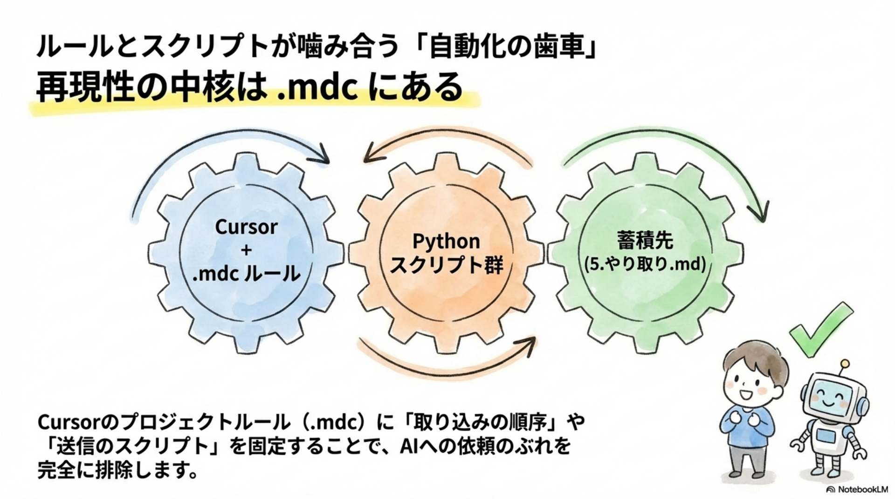
Main 資料（4 / 15）
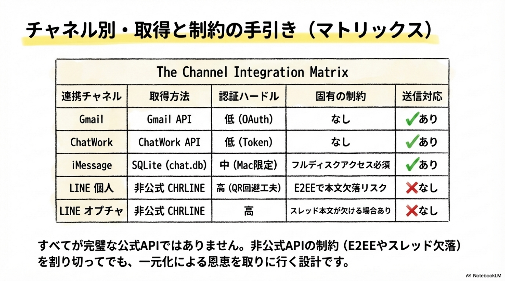
Main 資料（5 / 15）
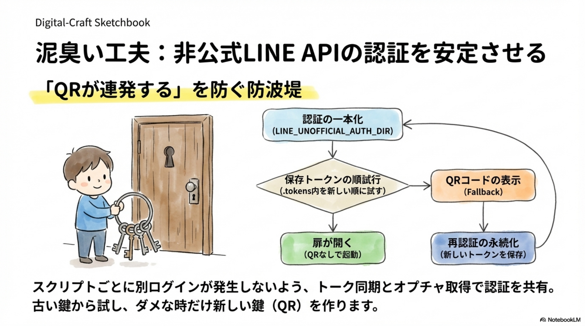
Main 資料（6 / 15）
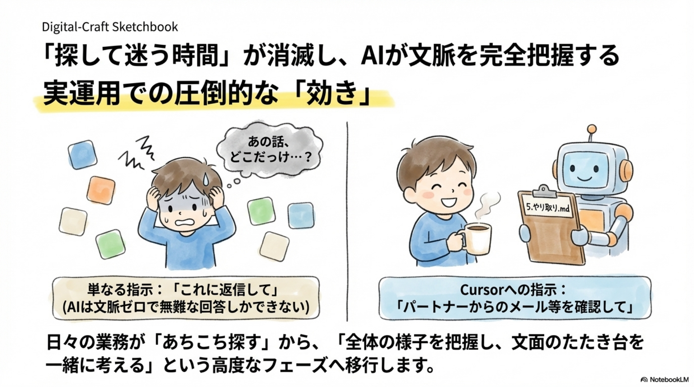
Main 資料（7 / 15）
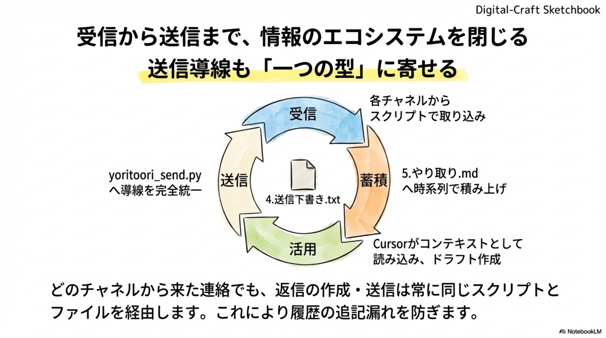
Main 資料（8 / 15）
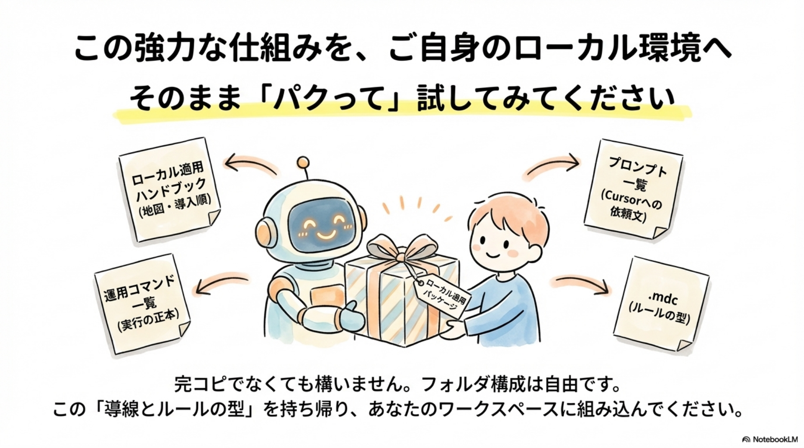
Main 資料（9 / 15）
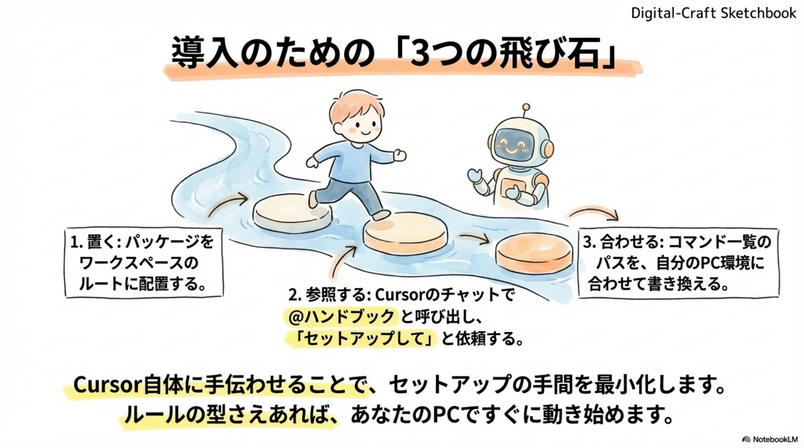
Main 資料（10 / 15）
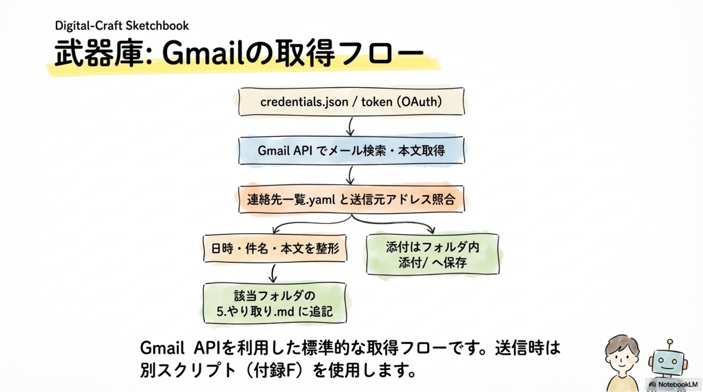
Main 資料（12 / 15）
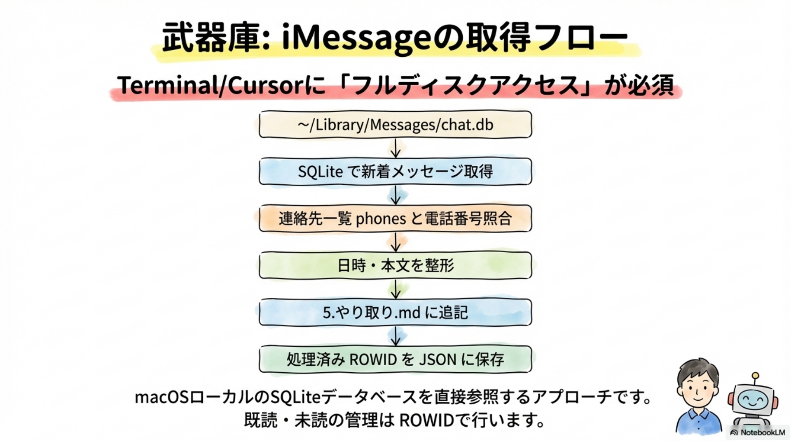
Main 資料（13 / 15）
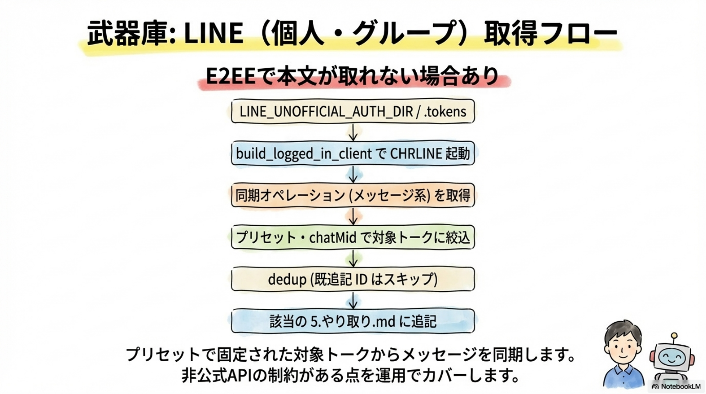
Main 資料（14 / 15）
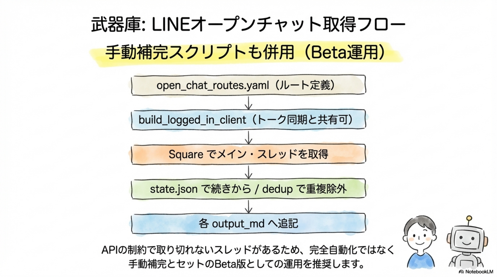
Main 資料（15 / 15）
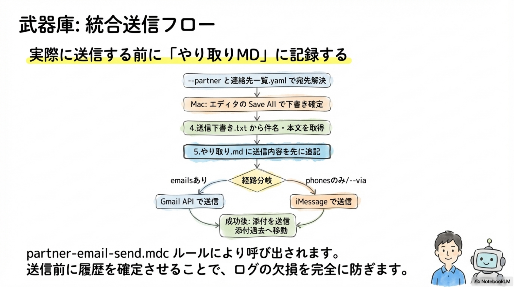
Last（まとめ）

← → または ↑ ↓ でスライド移動 · 画面をスクロールしても切り替え可